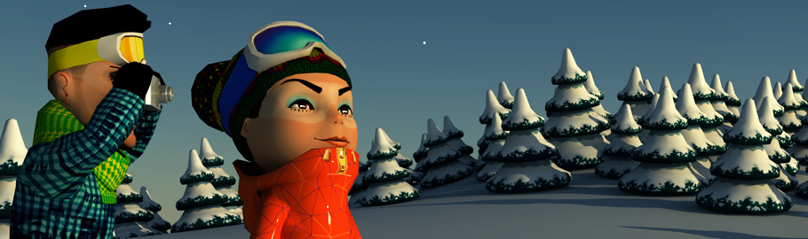

Экокурорт Наверх
Концепция круглогодичного эко-курорта, принятая компанией «Роза Хутор», предполагает неукоснительное следование следующим приоритетам:

Горнолыжный курорт «Роза Хутор» спроектирован и строится в соответствии со всеми нормами российского экологического законодательства и международных экологических стандартов.

Трассы в значительной части расположены выше уровня леса, что позволяет минимизировать объем его вырубки.

Наряду с традиционными будут использоваться альтернативные источники энергии.

В зоне катания будут расположены только трассы, подъемники и минимально необходимые для их функционирования инфраструктурные объекты.

При строительстве зданий и сооружений будет производиться единичная вырубка деревьев, в количестве, необходимом только для точечной застройки.

Поддержка экологического туризма и образовательных проектов в области экологии.

Трассы будут проложены по естественным склонам, что подразумевает минимальный объем земляных работ, а значит минимальное изменение естественного ландшафта.
Применение наиболее современных, экологически адаптированных и сертифицированных технологий (бесшумное оборудование, противооползневые, противоэрозийные, противолавинные системы и пр.) и материалов.
Реализация проекта осуществляется в сотрудничестве со специалистами Всемирного фонда дикой природы (WWF) и Сочинского национального парка.
WWF оказывает экспертную поддержку по применению экологически безопасных технологий строительства, энерго- и водосбережения.
Наряду с этим, специалисты WWF консультируют компанию «Роза Хутор» по вопросам, связанным с использованием мирового опыта экологического строительства, оказывают методическую и информационную поддержку инициативам «Розы Хутор» в области поддержки экологического образования и развития эко-туризма.
Природоохранные мероприятия реализуются в координации с дирекцией Сочинского национального парка.

|
— Мы с удовлетворением приняли приглашение «Роза Хутор» стать консультантами в вопросе строительства первого в России экокурорта. В России пока очень немного случаев, когда инвестор сам стремится осуществить строительство с учетомвсех возможных экологических требований. Хочется верить, что инициатива «Роза Хутор» станет началом нового подхода к развитию российских курортов «Роза Хутор».
Игорь Честин Директор Всемирного фонда дикой природы (WWF) |
Восстановление переднеазиатского леопарда на Кавказе Наверх
Весной 2007 года компания «Роза Хутор» заявила о своем намерении поддержать уникальный проект Всемирного фонда дикой природы (WWF) — «Восстановление популяции переднеазиатского леопарда на Кавказе».
Задача инициаторов проекта — вернуть переднеазиатского леопарда в Россию. Для чего предусмотрен завоз животных из стран, где они обитают сегодня, строительство вольеров для их содержания и размножения, адаптация животных к природным условиям Кавказа.

Проект проводится при поддержке Министерства природных ресурсов России и Росприроднадзора и контролируется лично Председателем Правительства РФ Владимиром Путиным.
Проект по восстановлению популяции леопарда уникален, подобного опыта восстановления исчезающих видов животных во всем мире еще не было. Кроме того, некогда барс был символом этих мест, и его возвращение положительно скажется на развитии экологического туризма на Кубани, что вполне отвечает концепции круглогодичного экокурорта «Роза Хутор».
В 2009 году на территории Сочинского национального парка было завершено строительство Центра разведения и реабилитации леопардов. 19 сентября 2009 года при участии Председателя Правительства Российской Федерации Владимира Путина, председателя Координационной комиссии МОК Жан-Клода Кили и Исполнительного директора МОК Жильбера Фелли в вольеры выпустили первых двух переднеазиатских леопардов, специально привезенных в Россию из Туркмении. Эти леопарды станут основой для восстановления популяции переднеазиатского леопарда на Кавказе.
|
— «Роза Хутор» тщательно учла все требования экологов при работе над проектом. Если во время проведения работ не будет допущено серьезных отступлений от этого проекта, нам удастся сохранить красоту окружающей природы и чистоту рек в этом районе.
Николай Пеньковский Директор сочинского Национального парка |
| Поделиться: |
|